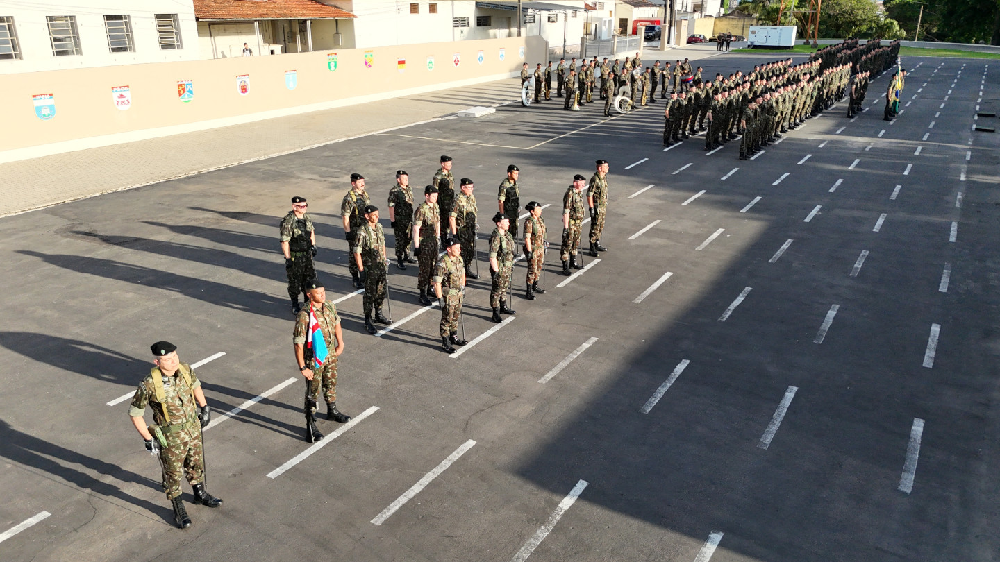
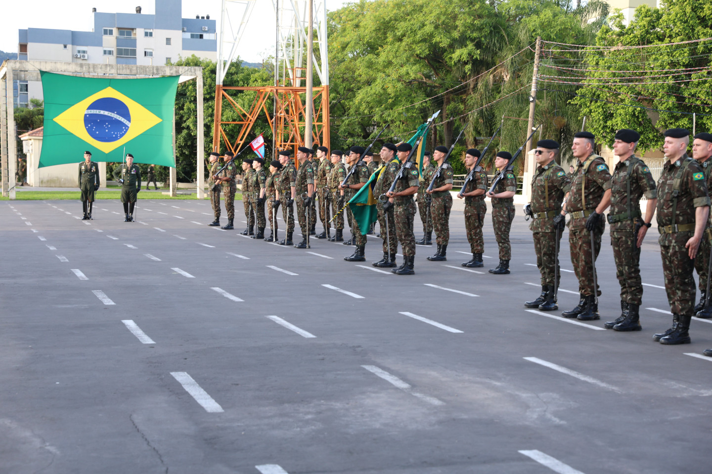
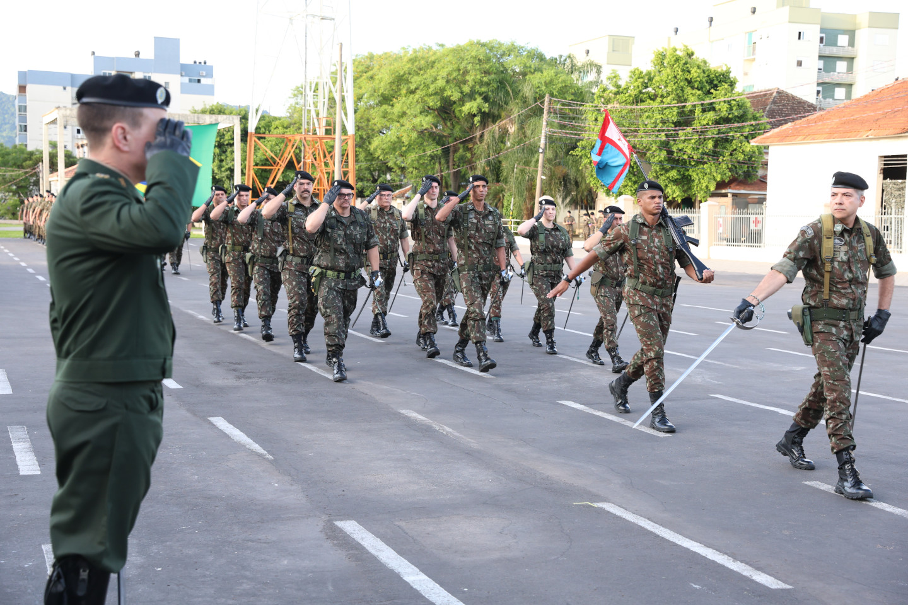
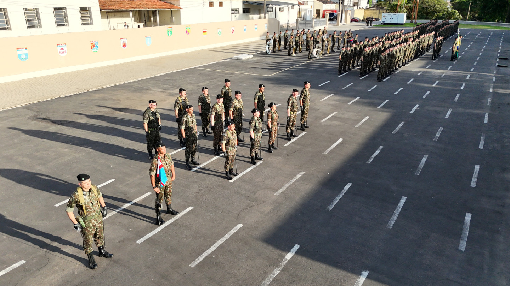
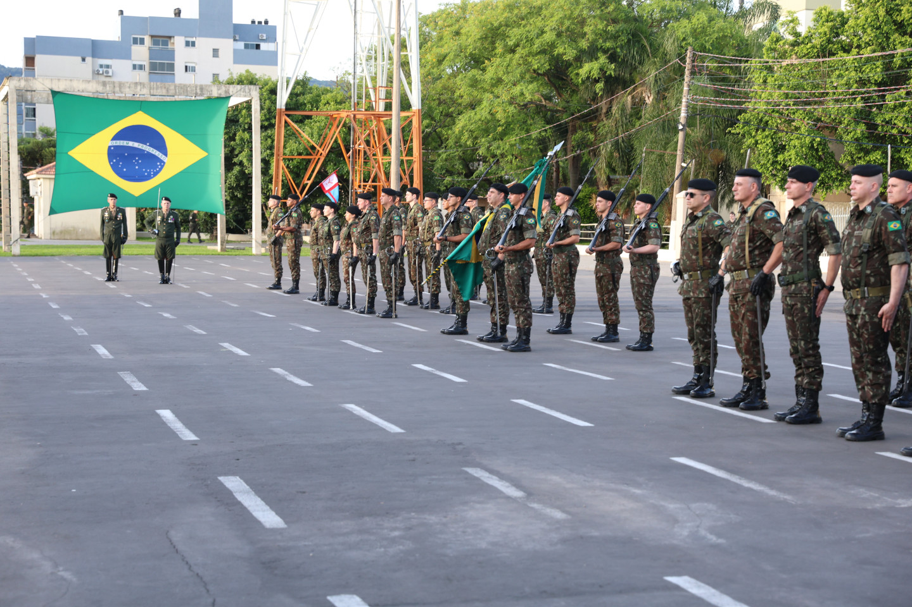
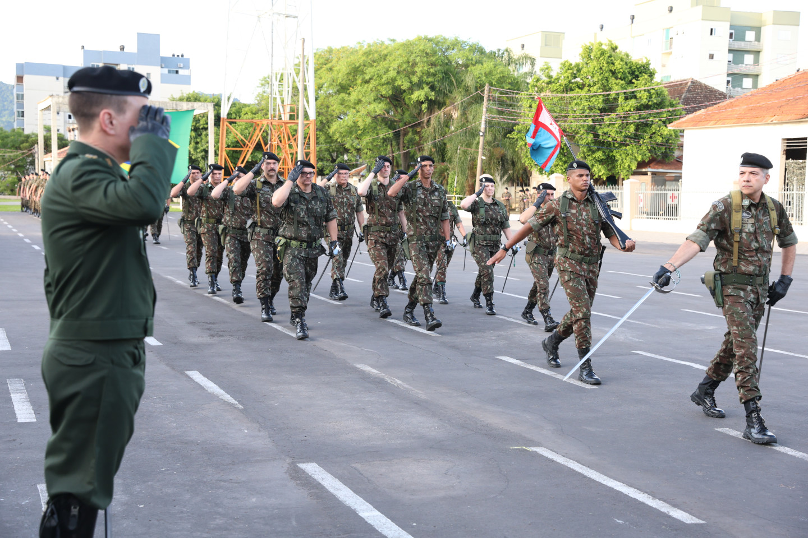

Cerimônia de passagem de Comando da Base Administrativa da Guarnição de Santa Maria
Published: 11/12/2024 09:42
Santa Maria (RS) - No dia 11 de dezembro de 2024, foi realizada a cerimônia de passagem de comando da Base Administrativa da Guarnição de Santa Maria, do Coronel EVERTON CONCEIÇÃO SOARES para o Coronel DÉLCIO DE DEUS GULART.
 





A cerimônia foi presidida pelo General de Divisão PAULO ROBERTO RODRIGUES PIMENTEL, Comandante da 3ª Divisão de Exército – Divisão Encouraçada, contou com a presença dos Comandantes das Organizações Militares da Guarnição de Santa Maria, autoridades civis, familiares e convidados.
A atividade iniciou com a inauguração do retrato do Comandante sucedido no auditório da 6ª Brigada de Infantaria Blindada – Brigada Niederaurer. Após o evento, ocorreu a formatura de transmissão do cargo de Comandante.